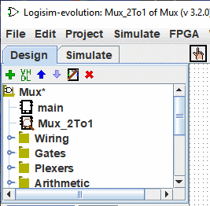
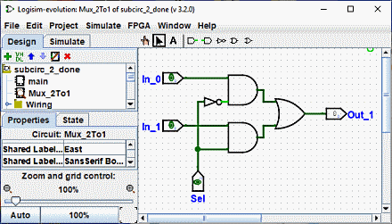

上一节: 子电路
创建电路
每个 Logisim-evolution 项目实际上都是一个电路库。 在最简单的形式中，每个项目只有一个电路（默认情况下称为 main），但添加更多电路很容易：单击  小菜单栏位于导航面板上方，或者右键单击导航面板中树的根部，或者选择| Project |→| Add Circuit... |，然后为所需的新电路输入您喜欢的任何名称创造。
小菜单栏位于导航面板上方，或者右键单击导航面板中树的根部，或者选择| Project |→| Add Circuit... |，然后为所需的新电路输入您喜欢的任何名称创造。
注意： 电路名称必须以字母（A..Z、a..z）开头，可以包含符号（.、_）和数字。
假设我们要构建一个名为 Mux_2to1 的 2 选 1 多路复用器。”添加电路后，Logisim 将如下所示。

在资源管理器窗格中，您现在可以看到该项目现在包含两个电路，main 和 Mux_2to1 Logisim 在 图标上绘制了一个放大镜 当前正在查看的电路； 当前电路名称也会出现在窗口的标题栏中。
将电路编辑为 Mux_2to1 后，我们可能会得到以下电路。

下一节: 使用子电路.